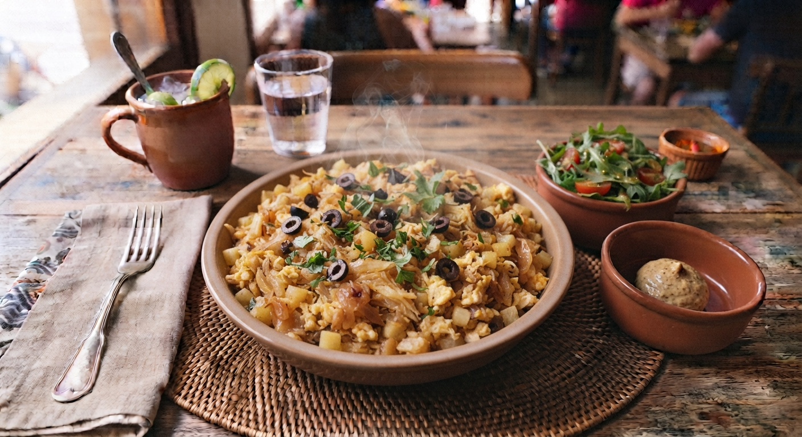

Bacalhau à Brás
Um dos pratos mais emblemáticos de Portugal, originário de Lisboa. Consiste em bacalhau desalmado esfiado, batata palha fina, ovos mexidos e cebola, finalizado com salsa e azeitonas pretas.

⏱️ Tempo: 30min
🍽️ Rendimento: 4 porções
🔥 Dificuldade: Fácil
Ingredientes
- 400g de bacalhau desalmado e desfiado
- 300g de batata palha de boa qualidade
- 1 cebola grande cortada em rodelas finas
- 2 dentes de alho picados
- 4 ovos batidos
- Azeite de oliva, salsa picada, sal e pimenta a gosto
- Azeitonas pretas para decorar
Modo de Preparo
- Numa frigideira larga, aqueça um bom fio de azeite e refogue a cebola e o alho até ficarem translúcidos.
- Adicione o bacalhau desfiado e deixe cozinhar por cerca de 5 minutos, mexendo bem.
- Junte a batata palha à frigideira e envolva tudo muito bem com o bacalhau e a cebola.
- Reduza o lume para o mínimo, adicione os ovos batidos e mexa constantemente até que os ovos fiquem cremosos mas não totalmente secos.
- Retire do lume, polvilhe com salsa fresca picada e decore com azeitonas pretas antes de servir.